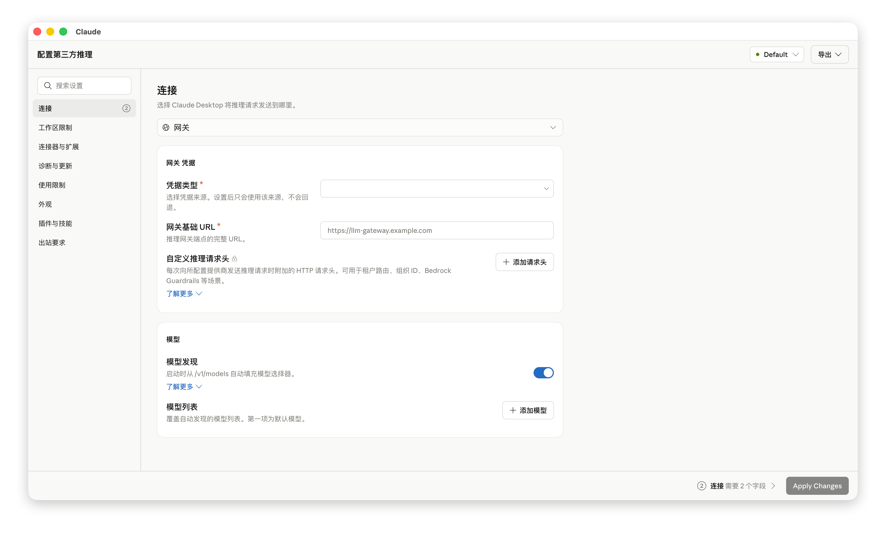
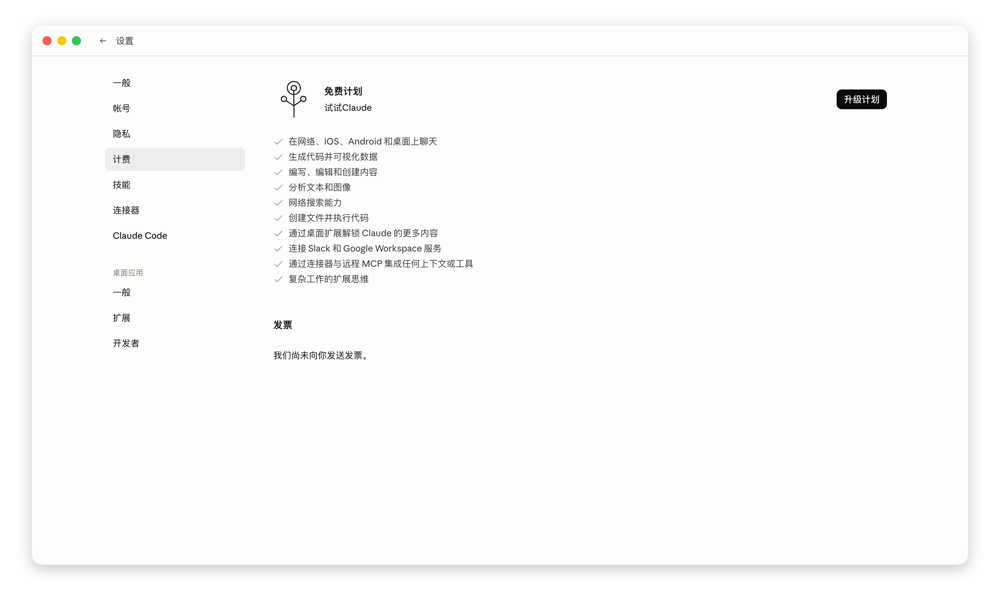
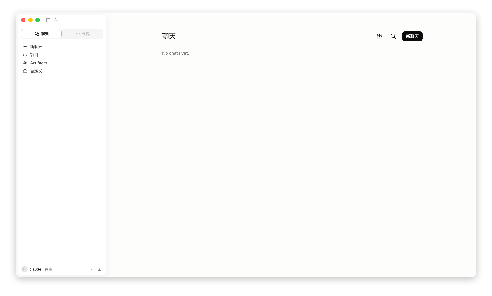

社区驱动 · 截图定位 · 全流程验证
翻漏必补
Claude Desktop 中文补丁不只替换资源文件，也会追踪设置页、第三方供应商、Remote Control、Markdown 渲染和异常提示里的漏翻，把问题从截图带到补丁和回归验证。
截图优先全屏截图、页面入口、期望中文一起进入定位。
来源分层区分资源 JSON、chunk 硬编码、模型输出和用户内容。
实机闭环安装、恢复、覆盖度与渲染补丁都要回归。
社区反馈会被拆成可复现、可定位、可测试的补丁任务。每个修复点都要尽量留下覆盖度检查或行为测试，避免下个 Claude 版本更新后再次漏掉。
提交上下文
全屏截图优先，红框可选。页面入口、操作路径、原英文和期望中文越完整，定位越快。
减少反复确认
定位来源
先判断文本来自 i18n 资源、JS chunk、运行时报错还是用户内容，避免把不该翻译的内容改坏。
事实先于判断
补丁落地
资源替换优先，chunk 补丁兜底。品牌词和协议名按官方命名保留或采用中英混排。
不做生造翻译
回归验证
验证资源结构、覆盖度报告、补丁行为、安装恢复链路和实机显示，确认不是只改了文件。
修完必须能跑
补丁覆盖聊天、设置、报错、Cowork、第三方供应商和工具输出。后续新增界面会通过 Issue 与截图继续补齐。
UI
聊天与设置
常用按钮、设置说明、连接器迁移提示、Remote Control 等高频路径优先修复。
高频入口设置说明迁移提示
3P
第三方供应商
覆盖模型供应商配置、连接测试、错误反馈和管理页面中的漏翻候选。
连接测试错误反馈管理页面
MD
富文本与 Markdown
关注工具使用详情、详细视图、会话加载失败等渲染异常，不只处理表面文案。
工具详情详细视图加载失败
IO
安装与恢复
WindowsApps 权限、备份、写入失败和恢复路径都有容错，降低补丁安装风险。
备份还原权限容错写入 fallback
QA
覆盖度检查
保留品牌名和技术词官方写法，同时把明显英文句子留给人工继续追踪。
资源校验误报降噪人工追踪
截图用于展示当前补丁效果，也用于暴露下一轮需要继续追踪的漏翻点。点击图片可放大查看。

聊天 主界面 全新对话体验

设置 计划信息 免费计划功能列表

网关 第三方推理 模型与连接配置
安装与反馈
一边保持安装简单，一边让漏翻反馈可执行。
使用者只需要运行入口脚本；反馈者只需要把截图和路径交代清楚。其余定位、补丁和验证由项目流程处理。
安装补丁
下载最新 Release 后，右键以管理员身份运行入口脚本，按提示选择安装中文补丁。
- 1下载最新版本压缩包并解压到本地目录。
- 2右键 claude-zh-cn.bat，选择以管理员身份运行。
- 3安装完成后完全关闭 Claude Desktop，再重新打开。
→入口脚本会打开操作菜单，选择 安装中文补丁 即可。
反馈漏翻
不要只贴一句英文。请尽量给出全屏截图、所在页面、触发操作和你期望看到的中文。
提交 Issue
全屏截图保留导航、弹窗和上下文。
页面入口例如设置页、第三方供应商、工具详情。
触发动作点击了哪个按钮，是否有报错。
期望中文如果你有更顺的译法，直接写出来。
发现漏翻，就交给闭环。
这个项目的重点不是反复提醒安装，而是在 Claude Desktop 持续更新时，让每个可证实的漏翻都有入口、状态和验证结果。